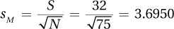

Appendix D
APPENDIX D
Solutions to Part Tests
D-1
Part I: Chapters 1–5
Use Column B of Appendix A, Table 1: 49.01%.
Use Column C: 17.62%.
Use Column A: 91.47%.
Use Column B for –0.23 and 1.84: 9.10% + 46.71% = 55.81%.
z = –0.44; x = M + (s × z) = 100 + (15 × –0.44) = 93.40
ACT: X = M + (s × z) = 21.50 + (5 × 1.70) = 30.00
Use Column B for –2.23 and –1.23: 48.71% – 39.07% = 9.64%.
Answer each section.
6 12 5 2458 4 44578 3 1233366 2 2468 1 19 i = 4
25 – 28
12.50
12.50
22.50
N = 150
1.00
∑X = 7 + 9 + 4 + 11 + 14 = 45.0000 = 45.00
∑(X – M ) = (7 – 9.00) + (9 – 9.00) + (4 – 9.00) + (11 – 9.00) + (14 – 9.00) = 0.00
∑(X – M )2 = (7 – 9.00)2 + (9 – 9.00)2 + (4 – 9.00)2 + (11 – 9.00)2 + (14 – 9.00)2 = 58.00

Median = score number ; scores in order: 4 7 9 11 14; Mdn = 9.00
s, σ, s2, σ2
s = 5.00

95%CI = M ± (1.96 × sM) = 157 ± (1.96 × 3.6950) = 157 ± 7.2423
= [149.76, 164.24]
We are 95% confident that the mean number of times teenagers in the United States check their phones for texts daily is between 149.76 and 164.24.
QE; GV
E; IV
QE; GV
E; DV
QE; DV
Grouped Frequency for an Interval Variable
Interval Midpoint Frequency Cumulative Frequency Percentage Cumulative Percentage 70–79 74.5 3 60 5.00% 100.00% 60–69 64.5 8 57 13.33% 95.00% 50–59 54.5 22 49 36.67% 81.67% 40–49 44.5 18 27 30.00% 45.00% 30–39 34.5 8 9 13.33% 15.00% 20–29 24.5 1 1 1.67% 1.67% Nominal
Ratio
Ratio (could argue for Interval)
Interval
Ordinal
12.4550 = 12.46
13.4105 = 13.41
14.7812345 = 14.78
15.9937 = 15.99
16.99 = 16.99
D-2
The distribution is unimodal, doesn’t seem too peaked or too flat, and is not skewed.
The distribution is unimodal, doesn’t seem too peaked or too flat, and is positively skewed.
The distribution is unimodal, is quite peaked, and is not skewed.
The distribution is bimodal, doesn’t seem too peaked or too flat, and is not skewed.
The distribution is unimodal, is quite flat, and is not skewed.
The distribution is unimodal, doesn’t seem too peaked or too flat, and is negatively skewed.
Part II: Chapters 6–9
95% CIμDiff = (M1 – M2) ± (tcv × sMD)
= (52 – 48) ± (1.966 × 0.73)
= [2.56, 5.44]
(Note: The subtraction of means has been arranged to arrive at a positive number. A CI from –5.44 to –2.56 is also correct.)
First, calculate the standard error of the mean:
Then, calculate t:
where df = N − 2 = (12 + 10) − 2 = 20
First, recognize that this is a dependent-samples t test, since the information states that we have pairs of cases:
N = 25, df = N − 1 = 24
tcv = 2.064
(Note: Subtraction of means has been arranged to arrive at a positive number. A CI from –0.30 to –0.10 is also correct.)
z(N = 55) = 1.70, p >.05
Adele is using the wrong test. She should be conducting an independent-samples t test with df = 25.
The confidence interval is very wide, so the size of the effect is uncertain. Meghan should suggest that future research increase the sample size, N, and repeat the study.
D-3
Note that the numerator is (men – women) and should be a positive number. If it is a high positive number, reject the null hypothesis.
Failed to reject the null hypothesis.
The researcher should use a paired-samples t test.
The researcher should use an independent-samples t test.
Realize that this is an independent-samples t test, then figure out df(75), find tcv, calculate t = 4/2.5 = 1.60, and realize that we fail to reject. Report
t (75) =1.60, p > 0.05
No. There is a homogeneity of variance problem: One s is more than twice the other. Also, a vast discrepancy exists between the two sample sizes. Homogeneity of variance is robust only if the value of the n’s are roughly equal.
No. We will need to know σ if we are going to perform a one-sample z test.
In the populations, Druids are probably more spiritual than Wiccans.
False. The value of the test statistic as compared to the critical value determines whether or not the null hypothesis should be rejected. However, if the null is not rejected, there is the possibility of a Type II error occurring. Power refers to the probability of rejecting the null hypothesis when the null hypothesis should be rejected, and we know β + power = 1.00. β, the probability of making a Type II error, is commonly set at 0.20, or 20%, meaning that we generally want power to be 80% or higher.
The researcher should use a paired-samples t test.
The researcher should use a single-sample z test.
The storeowner should use an independent-samples t test.
A study was conducted to see if altruism or self-interest motivates people more. Members of a high school band doing a fundraiser were randomly assigned to one of two groups: an altruism group that was told it was raising money to help others, and a self-interest group that was told it could keep 10% of the money raised. The self-interest group raised an average of $78.66 per member, while the altruism group raised, on average, almost $27 more per member, with a mean of $106.00. The difference in amount raised is statistically significant [t(70) = 6.72, p < .05] The effect size is large and r2 = 40% indicating that the type of motivation accounts for a large portion of the variability in how much money is raised. The size of the difference in the larger population probably ranges from a $19.22 to a $35.46 increase in fundraising with altruism as a motivation. This study suggests that altruism is a more powerful motivator than self-interest. Replication of the study with different age groups and different types of tasks is recommended to determine the limits of the effect.
A study was conducted to examine the impact of organic foods on intelligence. Using a matched-pairs design, 25 children who were fed organic food as babies were matched against 25 children who were not fed organic food as babies. Families were matched on SES and other potential confounding variables. In the organic food group, mean IQ in first grade was 109, whereas it was 102 in the nonorganic food group. The 7-point difference in means is statistically significant [t(24) = 5.00, p < .05]. The effect is meaningful; being fed organic food as babies seems to have a positive effect on intelligence, enough potentially to make a difference in the child’s life, possibly allowing the child to do better in school, attend a better college, and so on. Since the study participants were matched for SES and other potentially confounding variables, the effect is more likely to be due to the organic food than to, for instance, SES, child rearing style, or parental intelligence. It is recommended that the study be replicated with a larger sample size to determine if the same effect is observed. Additionally, participants should be tested at a future point, such as after high school, to see if the effect is sustained.
D-4
Part III: Chapters 10–12
Source of Variability Sum of Squares Degrees of Freedom Mean Square F Ratio Between groups 728.00 2 364.00 68.29 Within groups 48.00 9 5.33 Total 776.00 11 Overall F is statistically significant, so it is appropriate to do a post-hoc test. To use the HSD formula, first find q = 3.61: . Therefore, any pair of means that differ by ≥ 8.72 points statistically differ.
Groups 1 and 2 differ by 3.57 points, not a statistically significant difference.
Groups 1 and 3 differ by 13.63 points, a statistically significant difference.
Groups 2 and 3 differ by 10.06 points, a statistically significant difference.
+ Expect – Expect Env A 100 100 100.00 Env B 130 70 100.00 115.00 85.00 
The effect of the environment on outcome depends on the type of expectations.
The effect of the expectations on outcome depends on the environment.
This is a two-way design with exercise preference and preference for fruit or chips being the “ways.” Each way has two levels. Both ways have independent samples.
This is a one-way design with type of instruments being the “way.” This way has four levels. The samples are independent.
This is a one-way design with the year of college being the “way.” This way has four levels. The samples are dependent.
This is a three-way design with type of symptom, type of medication, and when measured being the “ways.” The ways have two, two, and three levels, respectively. Two of the ways have independent samples; the third way, when outcome is measured, involves dependent samples.
This is a one-way design. Type of major has three levels. The samples are dependent because each student belongs to one and only one treatment and is measured only once.
Answers will vary, but should display the characteristics indicated below:
A between-subjects, one-way ANOVA:
One grouping variable with at least two levels.
Independent samples.
Dependent variable should be either interval- or ratio-level.
Example: Compare body mass for lacrosse players, soccer players, and cross country runners.
A one-way, repeated-measures ANOVA:
One grouping variable with at least two levels.
Dependent samples.
Dependent variable should be either interval- or ratio-level.
Example: Compare body mass at the beginning, middle, and end of the first semester. Each student is measured 3 times.
A between-subjects, two-way ANOVA:
Two crossed independent variables, each with at least two levels.
Independent samples.
Dependent variable should be either interval- or ratio-level.
Example: Compare boys vs. girls and right-handers vs. left-handers in terms of age (in months) and when they first walked.
D-5
Paired-samples t test because each student is measured twice and the outcome variable is interval or ratio. Could also use repeated-measures ANOVA.
Paired-samples t test because each student is measured twice. (Or, repeated-measures ANOVA.) Between-subjects, one-way ANOVA because each person is assigned to only one of the drugs and is measured only once.
Single-sample z test because the target mean is specified. The known value of sigma is not used because the hospitals in the rural communities may have a different standard deviation.
The critical value for the F statistic is 3.35:
Groups 1 and 2 differ by 1.5 years, and this is not a statistically significant difference. Groups 1 and 3 differ by 3.8 years, and this is a statistically significant difference. Groups 2 and 3 differ by 2.3 years, and this is a statistically significant difference. r 2 = 39%.
I compared the age at which women had their first child depending on whether they had previously been frequent or regular babysitters, or not babysitters at all. The effect was strong and statistically significant—being a regular babysitter was associated with waiting longer to bear a child. This study suggests that regular babysitting functions as a sort of contraceptive. But, please, to draw a cause-and-effect conclusion, young women would have to be assigned to do different amounts of babysitting.
Part IV: Chapters 13–16
Because df is 38, the sample size, N, = 40. The z-transformed value is found using Table 7 to be –.472.
The standard error on the z scale is
Transforming back to correlation units using Table 8 gives (–.66, –.15).
First, compute the slope:
Then, compute the intercept:
a = MY – bMx = 55 − 0.7225(60) = 11.65
Finally,
Y´ = bX + a
= 0.7225(50) + 11.65 = 47.78
Yes, because (1) the assumption of a random sample is satisfied; (2) the assumption of independence of scores is presumably satisfied if there is no collusion among students; (3) the assumption of normality seems reasonable; and (4) the assumption of linearity of relationship seems reasonable.
A direct relationship is shown.
The predictor variable is the score on Test 1; the criterion variable is the score on the final exam.
You should not predict outside the range of the data, or from about 30 to 80 on Test 1.
Pearson correlation coefficient
Paired t test or repeated-measures ANOVA
Between-subjects, one-way ANOVA
Between-subjects, one-way ANOVA
Chi-square test of independence
D-6
X Y X – MX Y – MY (X–MX)
(Y – MY)(X–MX)2 (Y–MY)2 93 8 40 –4 –160 1,600 16 48 11 –5 –1 5 25 1 18 17 –35 5 –175 1,225 25 M = 53 M = 12 ∑ = –330 ∑ = SSX = 2,850 ∑ = SSY = 42 SSXSSY = 119,700 When comparing a specific value to the population value and the population standard deviation is not known
When looking at the relationship between an ordinal variable and ordinal-, interval-, or ratio-level variable
When comparing an ordinal-level variable between two independent samples
When comparing the means of two or more dependent samples
A dietician looked at the relationship between the use of a Mediterranean diet and degree of memory impairment in a representative sample of Americans. He found a significant inverse relationship: The more closely people followed the diet, the less impairment they displayed. The relationship was not a strong one, but it was statistically significant. We think the effect is small yet meaningful. The study included a representative sample of Americans, so we can generalize these results to Americans at large.
However, because correlation is not causation, we cannot say that following the diet results in better memory. Perhaps a certain type of person, say, someone of Mediterranean ancestry, is more likely to follow the diet. And these people, because of their genetic heritage, are also less likely to experience memory impairment in their old age. Additionally, because the sample was age 55 at the start of the study, we do not know about the diet’s effect on younger people. Finally, we don’t know how well each individual followed the diet during intervening years. We only assessed whether the diet was followed at the start of the study.
There are limitations to this study, but it does suggest that the Mediterranean diet may be of some benefit in preventing/reducing short-term memory impairment. It is certainly worthy of further study.
We will use a chi-square goodness-of-fit test. The assumptions appear to be satisfied, namely: (1) it was not a random sample of children, but this assumption is robust; (2) independence of the observations (assuming no multiple births); and (3) all expected frequencies at least 5 (see below). We will test for a 50:50 sex ratio.
The expected frequencies are both
The observed frequencies are
fObserved, Male = 81
fObserved,Female = 125 – 81 = 44
The test statistic is computed as
The df is 1 = (2 – 1). The critical value is 3.841. The observed test statistic exceeds the critical value. There is evidence that the observed number of boys in the classroom is unusual.
D-7
We will use a chi-square test of independence. The assumptions appear to be satisfied, namely: (1) it was not a random sample of parents, but this assumption is robust; (2) independence of the observations because each parent performed the test only once and presumably did not collude over the results; and (3) all expected frequencies are at least 5 (see below). The observed frequencies are given. The expected frequencies are as follows:
Say
“Fever”Say
“No fever”Actual
fever1,033 Actual
no fever1,067 1,043 1,057 The test statistic is
The df is 1 = (2 – 1)(2 – 1). The critical value is 3.841. The observed test statistic exceeds the critical value. There is evidence the hand on the forehead technique does predict whether there is a fever. But the size of the effect is small and the parents made a lot of errors. When the doll’s temperature was elevated, the parents correctly detected fever only 59% of the time; when the doll’s temperature was normal, they incorrectly perceived a fever 41% of the time.
First, compute the slope:
Then, compute the intercept:
a = MY – bMx
= 42 – 0.235(128)
= 11.92
Finally,
Y´ = bX + a
= 0.235(73) + 11.92
= 29.08